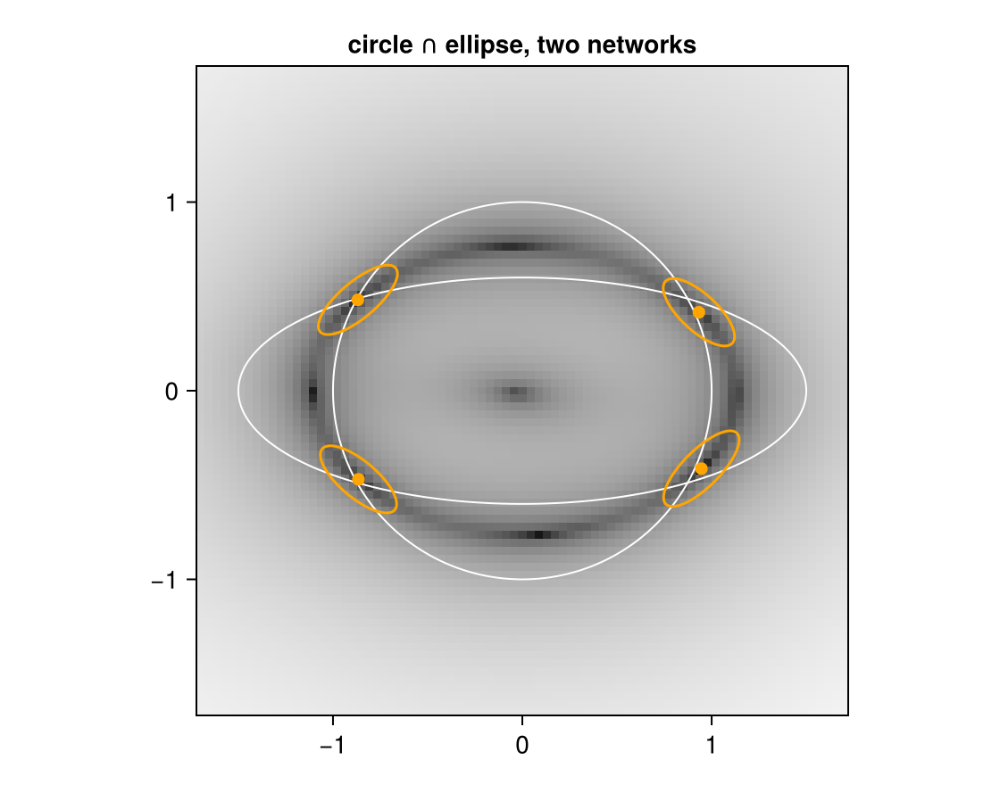

Intersections: several learned relations at once
Download as a Jupyter notebook
Train three small diffusion models separately, on a circle, a line and an ellipse. None of them has seen the others' data. Asking where the circle meets the line is then a query on two models, not a new training problem: add their fields, and the answers of the sum are the configurations that satisfy both relations. This is a product of experts (Hinton, 2002), read as a relation.
ProductRelation builds the sum. Every query function works on it: all answers, their uncertainty, and gradients through the intersection into every network. (Background: the vault note Composing Diffusion Factors.)
using VariationalDiffusion, Lux, LuxCore, Random, LinearAlgebra, Optimisers, Printf
using DifferentiationInterface, Zygote
using CairoMakieThree networks, three datasets
The network and the training loop are those of tutorial 2, with one change: the learning rate drops to a third halfway through, which roughly halves the smoothing bias of the learned curves. Each dataset is a curve with a little noise.
const sched = VPSDE()
const FREQ = [0.5, 1.0, 2.0, 4.0, 8.0]
embed(t) = vcat(sin.((2π .* t) .* FREQ), cos.((2π .* t) .* FREQ))
input(z, t) = vcat(z, embed(t) .* ones(eltype(z), 1, size(z, 2)))
net = Chain(Dense(12 => 64, swish), Dense(64 => 64, swish), Dense(64 => 2))
circle(rng, B) = (θ = 2π .* rand(rng, B); vcat(cos.(θ)', sin.(θ)'))
line(rng, B) = (u = 3.2 .* rand(rng, B) .- 1.6; vcat(u', u')) # y = x
ellipse(rng, B) = (θ = 2π .* rand(rng, B); vcat(1.5 .* cos.(θ)', 0.6 .* sin.(θ)'))
function batch(rng, shape, B)
z₀ = shape(rng, B) .+ 0.02 .* randn(rng, 2, B)
t = 1e-3 .+ 0.2 .* rand(rng, 1, B)
ε = randn(rng, 2, B)
zₜ = alpha.(Ref(sched), t) .* z₀ .+ sigma.(Ref(sched), t) .* ε
return (Float32.(vcat(zₜ, embed(t))), Float32.(ε))
end
f64(x::AbstractArray) = Float64.(x); f64(x::NamedTuple) = map(f64, x); f64(x) = x
function train(shape, seed; steps = 10_000)
rng = Xoshiro(seed)
ps, st = Lux.setup(rng, net)
ts = Training.TrainState(net, ps, st, Optimisers.Adam(1.0f-3))
for k in 1:steps
k == steps ÷ 2 && Optimisers.adjust!(ts.optimizer_state, 3.0f-4)
_, _, _, ts = Training.single_train_step!(AutoZygote(), MSELoss(), batch(rng, shape, 256), ts)
end
return f64(ts.parameters), ts.states
end
(pc, sc), (pl, sl), (pe, se) = train(circle, 1), train(line, 2), train(ellipse, 3)All three share the architecture, so they share one implicit learner m; what differs are the parameters. The model is built with density_lambda, so that the covariances below are calibrated (to the density smoothed at the field's noise levels).
pred = NoisePredictor(net, sched; input, ad = AutoZygote())
nodes = field_nodes(Xoshiro(1), 2; samples = 8)
m = ImplicitDiffusion(pred, nodes; λ = density_lambda(sched, nodes))First, each relation alone: clamp $x$, solve for $y$, compare with the exact curve.
exact = (circle = x -> sqrt(1 - x^2), line = x -> x, ellipse = x -> 0.6sqrt(1 - (x / 1.5)^2))
for (name, ps, st) in ((:circle, pc, sc), (:line, pl, sl), (:ellipse, pe, se))
f = exact[name]
err = [abs(first(implicit_infer(m, [x, 0.5], [Inf, 0.0], ps, st)).z[2] - f(x)) for x in -0.9:0.3:0.9]
@printf "%-8s error in y at x = -0.9 … 0.9: %s\n" name join(map(e -> @sprintf("%.3f", e), err), " ")
endcircle error in y at x = -0.9 … 0.9: 0.018 0.012 0.002 0.012 0.016 0.021 0.069
line error in y at x = -0.9 … 0.9: 0.002 0.001 0.004 0.007 0.010 0.013 0.012
ellipse error in y at x = -0.9 … 0.9: 0.018 0.007 0.005 0.008 0.013 0.020 0.029
A few hundredths everywhere, more near $x = 0.9$ on the circle, where it turns vertical and a small radial error becomes a large error in $y$.
Circle ∩ line
The product of two relations takes its parameters and states as tuples, one entry per factor. implicit_roots starts the solver from many points and keeps the distinct stable answers; with no coordinate clamped ($\rho = 0$) these are the points where both relations hold.
pair = ProductRelation(m, m)
roots_cl, _ = implicit_roots(pair, [0.0, 0.0], [0.0, 0.0], (pc, pl), (sc, sl); nstarts = 24, spread = 1.5, maxiters = 300)
for r in roots_cl
@printf "answer %s distance to the nearest exact point %.3f\n" round.(r.z; digits = 3) min(norm(r.z .- [1, 1] / √2), norm(r.z .+ [1, 1] / √2))
endanswer [0.691, 0.702] distance to the nearest exact point 0.017
answer [-0.689, -0.687] distance to the nearest exact point 0.026
Exactly the two intersection points $\pm(1, 1)/\sqrt 2$, within the accuracy of the two networks.
Circle ∩ ellipse, with uncertainty
The ellipse with semi-axes 1.5 and 0.6 meets the unit circle in four points, $(\pm 0.873, \pm 0.488)$. The same product works for any pair of relations; only the parameters change. Each answer also gets a Laplace covariance from implicit_laplace.
roots_ce, _ = implicit_roots(pair, [0.0, 0.0], [0.0, 0.0], (pc, pe), (sc, se); nstarts = 24, spread = 1.5, maxiters = 300)
exact_ce = [[sx * 0.8729, sy * 0.4880] for sx in (1, -1) for sy in (1, -1)]
laplace = [implicit_laplace(pair, r, [0.0, 0.0], (pc, pe), (sc, se)) for r in roots_ce]
for (r, L) in zip(roots_ce, laplace)
@printf "answer %s distance to exact %.3f standard deviations %s\n" round.(r.z; digits = 3) minimum(norm(r.z .- e) for e in exact_ce) round.(sqrt.(eigvals(Symmetric(L.cov))); digits = 3)
endanswer [0.933, 0.416] distance to exact 0.094 standard deviations [0.097, 0.241]
answer [-0.869, 0.482] distance to exact 0.008 standard deviations [0.096, 0.261]
answer [-0.865, -0.47] distance to exact 0.020 standard deviations [0.097, 0.251]
answer [0.946, -0.413] distance to exact 0.105 standard deviations [0.097, 0.266]
The picture: the exact curves in grey, the answers, and their 1σ ellipses. The background is the size of the product's field, $\log\lVert g_{\text{circle}} + g_{\text{ellipse}}\rVert$, dark where it vanishes.
grid = range(-1.7, 1.7; length = 81)
fieldsize = [log(norm(first(prior_field(pair, [x, y], (pc, pe), (sc, se))))) for x in grid, y in grid]
ring(a, b) = (θ = range(0, 2π; length = 200); (a .* cos.(θ), b .* sin.(θ)))
fig = Figure(size = (560, 440))
ax = Axis(fig[1, 1]; aspect = DataAspect(), title = "circle ∩ ellipse, two networks")
heatmap!(ax, grid, grid, fieldsize; colormap = :grays)
lines!(ax, ring(1, 1)...; color = :white, linewidth = 1)
lines!(ax, ring(1.5, 0.6)...; color = :white, linewidth = 1)
for (r, L) in zip(roots_ce, laplace)
E = cholesky(Symmetric(L.cov)).L
θ = range(0, 2π; length = 100)
lines!(ax, [r.z .+ E * [cos(a), sin(a)] for a in θ] .|> Point2f; color = :orange)
end
scatter!(ax, [Point2f(r.z) for r in roots_ce]; color = :orange, markersize = 10)
fig
The field is small along a whole dark curve between the circle and the ellipse: there the two relations pull with equal force in opposite directions, a compromise. Along it lie the four answers and, at the top, bottom, left and right, four saddles, which implicit_roots discards because they are unstable. Two more things to read off.
The error of an intersection is the relations' error, magnified by the crossing angle. The curves cross at about 45° here. A relation that is off by $\delta$ along its normal moves the intersection by $\delta/\sin 45° \approx 1.4\,\delta$, along the other curve. The two answers on the right are off by about 0.1, where both learned curves are a few hundredths off.
The Laplace ellipses are long in that same direction. The covariance is the inverse of $\sum_i J_i$, the summed curvatures. Each curve is sharp across itself and flat along itself, so the sum is flattest along the bisector of the two tangents, which is also the direction of the compromise curve. That is where the answer is least determined, and where the errors went. The covariance cannot know the size of the networks' errors, but it does say in which direction to expect them.
These covariances are calibrated to the density smoothed at the field's noise levels, which is why they are wider than the curves' thickness of 0.02. A finer field_nodes sharpens both.
Composition is not exact at positive noise levels, since smoothing does not commute with products (Du et al., 2023). For finding answers this is the same kind of smoothing bias a single relation has, and it is small next to the networks' own errors here.
Training through an intersection
The gradient of a loss on an answer flows through the intersection into both networks: implicit_pullback returns the parameter cotangent as a tuple. Here we fine-tune only the line, so that its upper intersection with the circle moves from 45° to 60°.
target = [cos(π / 3), sin(π / 3)]
ρ = [0.0, 0.0]
opt = Optimisers.setup(Optimisers.Adam(3e-3), pl)
pl′ = pl
z = roots_cl[argmax([r.z[2] for r in roots_cl])].z
for k in 1:80
sol, _ = implicit_infer(pair, z, ρ, (pc, pl′), (sc, sl); tol = 1e-10, maxiters = 200)
global z = sol.z
b = implicit_pullback(pair, sol, z, ρ, z .- target, (pc, pl′), (sc, sl)) # ∂ℓ/∂z for ℓ = ½‖z − target‖²
global opt, pl′ = Optimisers.update(opt, pl′, b.ps[2]) # b.ps = (circle, line)
k % 20 == 0 && @printf "step %2d answer %s miss %.4f\n" k round.(z; digits = 3) norm(z .- target)
endstep 20 answer [0.549, 0.861] miss 0.0490
step 40 answer [0.509, 0.855] miss 0.0138
step 60 answer [0.499, 0.868] miss 0.0020
step 80 answer [0.497, 0.867] miss 0.0028
The upper answer is now at 60°. What happened to the other intersection?
roots_after, _ = implicit_roots(pair, [0.0, 0.0], [0.0, 0.0], (pc, pl′), (sc, sl); nstarts = 24, spread = 1.5, maxiters = 300)
foreach(r -> println(round.(r.z; digits = 3)), roots_after)[0.498, 0.867]
[-0.791, -0.554]
The lower answer did not go to 240° ($(-0.5, -0.866)$), where a rotated line would put it. The loss only saw the upper answer, so only the line near it was changed; the rest of the line moved somewhere the loss never asked about. Training through inference shapes the branch it visits and nothing else. The open-problems note lists this as T7; a loss on every answer (here: both roots) is the remedy.
What to read next
- The construction and its limits: the implementation note product and Composing Diffusion Factors.
- What does the network add? A kernel baseline: the same queries with no network at all.
References
- Du, Y.; Durkan, C.; Strudel, R.; Tenenbaum, J. B.; Dieleman, S.; Fergus, R.; Sohl-Dickstein, J.; Doucet, A. and Grathwohl, W. (2023). Reduce, Reuse, Recycle: Compositional Generation with Energy-Based Diffusion Models and MCMC. In: International Conference on Machine Learning (ICML), arXiv:2302.11552.
- Hinton, G. E. (2002). Training Products of Experts by Minimizing Contrastive Divergence. Neural Computation 14, 1771–1800.
This page was generated using Literate.jl.